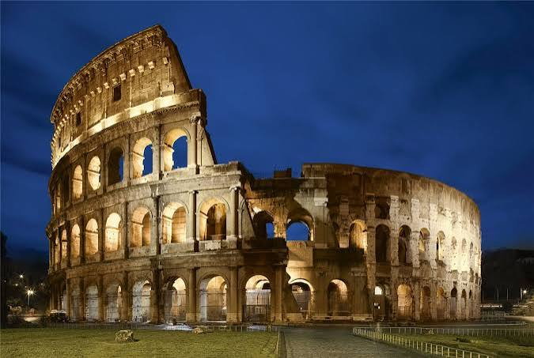

Europa es un continente rico en historia y cultura, y alberga una gran cantidad de monumentos históricos que reflejan su pasado fascinante. Desde castillos medievales hasta catedrales góticas, cada monumento cuenta una historia única.
En la siguiente tabla se presentan algunos de los monumentos históricos más destacados de Europa:
|
 |
||
| Torre Eiffel | Sagrada Familia | Big-Ben | Coliseo Roma |